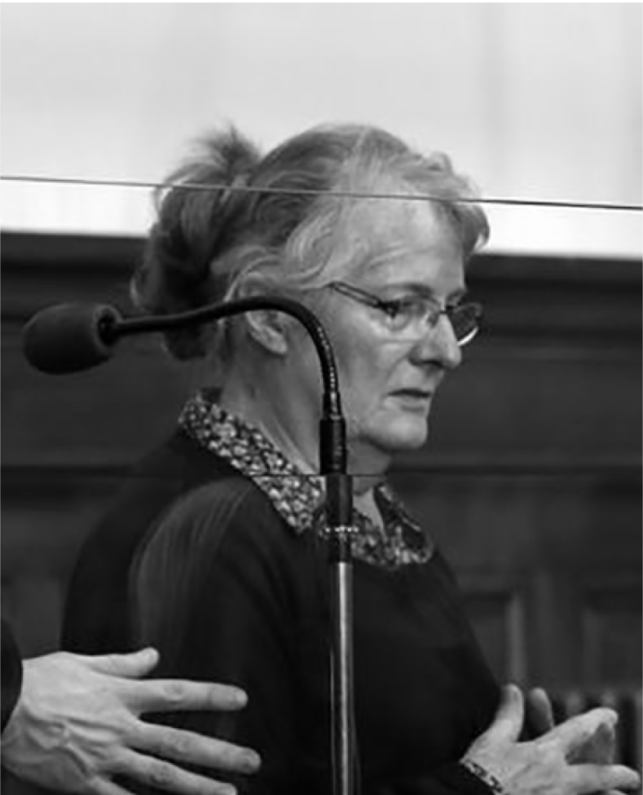

L'AFFAIRE
JACQUELINE SAUVAGE : le portrait d’une femme brisée

Adolescente, elle rencontre Norbert Marot , âgé de quelques mois de plus qu'elle. Contre l’avis unanime de sa mère, de son père, décédé quelques mois auparavant, et de ses cinq grands frères, elle l'épouse le 5 juin 1965. Ils ont quatre enfants : un fils, Pascal, et trois filles, Sylvie, Carole et Fabienne. En 1966, elle donne naissance à sa deuxième fille, Carole, alors que son mari part faire son service militaire. Il y passe ses permis poids-lourds, ce qui lui permet par la suite de décrocher ses premiers emplois.
En 1968, le couple fait construire un pavillon à La Selle-sur-le-Bied, dans le Montargois. En 1970, le couple s'installe à Melun, et Jacqueline accouche de sa troisième fille, Fabienne. Battue à longueur de temps, elle raconte que, parfois, son mari avait des regrets. Mais cela ne durait pas. Son seul moment de répit avec ses enfants ? La semaine. Norbert Marot s’absentait en effet souvent plusieurs jours, un "soulagement", raconte-t-elle.
“Quand on entendait le moteur du camion arriver, on tremblait". A son retour, il la faisait dormir dehors, ou parfois elle devait se mettre à l’abri dans la voiture de son fils. Visage tuméfié, corps couvert de bleus, Jacqueline Sauvage faisait tout pour le cacher à son entourage. Même lorsqu’elle recevait des coups de crosse.
Le 10 septembre 2012, au matin, Jacqueline Sauvage et Norbert Marot se disputent au sujet de l'entreprise. À 13 h 30, elle serait partie se coucher. Elle affirme avoir été brutalement réveillée à 16 heures par son mari pour qu'elle lui prépare à manger. Il aurait ensuite exercé sur elle des violences physiques : il l'aurait menacée puis frappée, et aurait arraché sa chaîne.
Toutefois si l’expertise médicale atteste d’un coup à la lèvre, elle ne signale aucune autre trace de violence significative sur le reste du corps. Jacqueline Sauvage déclare aussi avoir pris des médicaments pour faire une sieste de cinq heures, mais l'expertise n'a pas relevé de traces de médicament dans son organisme.
Sur les circonstances entourant le chargement du fusil, l'intéressée explique, pendant sa garde à vue, être descendue chercher des cartouches. À la barre, elle assure avoir vidé ses poches lors d'une précédente partie de chasse. Elle affirme avoir tiré les coups de feu à 16 heures, mais ceux-ci ont été entendus à 19 h 25 par les voisins. Par ailleurs, une voisine témoigne avoir vu Marot le jour même, dans l'après-midi, vers 17 h 30 tandis que Jacqueline Sauvage appelle les pompiers à 19 h 27.
Jacqueline Sauvage prétend avoir fermé les yeux lorsqu'elle a tiré les coups de fusil qui ont atteint son mari dans le dos, alors qu'il était assis sur leur terrasse. Ce comportement a paru surprenant de la part d'une personne ayant la pratique de la chasse.